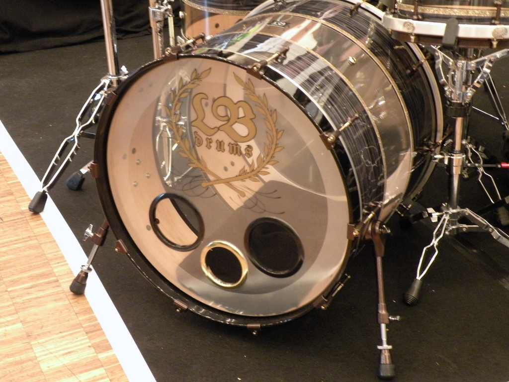
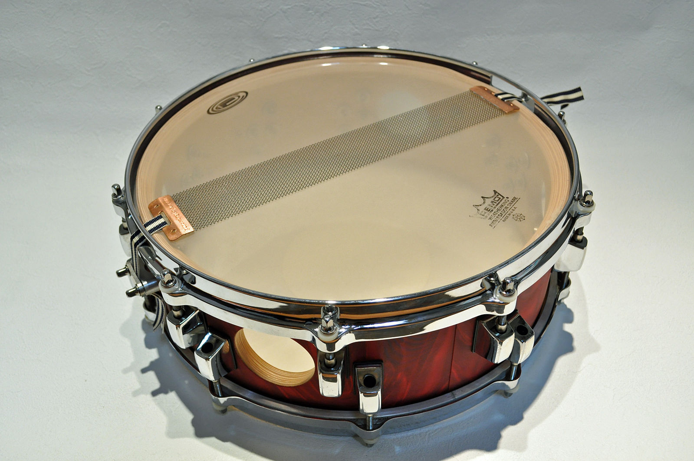
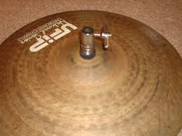

MASTER
TIME
FEEDBACK
FILTER
This demo lets you control an audio sampler with the webcam.
For this webpage to work please use a browser that supports 'getUserMedia'
(Chrome or Opera)
And allow them access to the webcam and microphone
Keep webcam still to avoid unwanted triggering